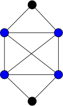

Cliques et stables
Définitions
Une clique $C$ d'un graphe $G=(V, E)$ est un ensemble de sommet de graphe tel que quelque soient $x \neq y \in C \subseteq V$, $xy \in E$.
Un stable est l'opposé :
Définitions
Une stable $S$ d'un graphe $G=(V, E)$ est un ensemble de sommet de graphe tel que quelque soient $x \neq y \in S$, $xy \notin E$.
Des deux définition précédentes, un sommet est à la fois une clique et un stable. Ils constituent les ensembles minimaux non vide. Réciproquement, on appelle clique maximale (resp. stable maximal) un ensemble maximal pour l'inclusion.
Dans le graphe suivant, les ensembles rouges et verts sont des cliques, mais seule l'ensemble rouge est maximal.
On appelle clique maximum (resp. stable maximum) une clique maximale (resp. stable maximal) maximum pour l'inclusion (il n'en existe pas de plus grande).
Définitions
Soit $G$ un graphe. On note :
- $\omega(G)$ la taille de ses cliques maximum
- $\alpha(G)$ la taille de ses stables maximum
Notez que pour l'exemple précédent, l'ensemble de sommets rouges n'est pas une clique maximum.
Montrez que pour le graphe $G$ précédent, $\omega(G) = 4$.
corrigé
corrigé
Pour ce genre de preuves, il faut procéder en deux temps :
- exhiber une clique de taille 4
- montrer que tout ensemble de 5 sommets n'est pas une clique.
Le sous ensemble des sommets bleus suivant est une clique :

Si on prend 5 éléments, cela revient à supprimer 1 élément du graphe et aucuns de ceux ci n'est une clique.
Il est facile, itérativement à partir d'une clique possiblement réduite à un point, de trouver une clique maximale :
algorithme clique_maximale(G: Graphe<sommet>, x:sommet) -> {sommet}
C := {sommet}
C <- {x}
tant qu'il existe un sommet y de G \ C tel que C U {y} est une clique:
C <- C U {y}
rendre CLe problème est qu'il y a de nombreux minima locaux, ce qui fait que trouver $\omega(G)$ ou $\alpha(G)$ pour un graphe donné est un problème difficile.
Montrez que pour le graphe $G$ précédent, l'algorithme peut, avec un même sommet de départ, trouver une clique maximale de taille 3 ou 4.
corrigé
corrigé
Il suffit de prendre un des deux sommets rouge à l'intersection de la clique de taille 4 et du triangle rouge.
Problème de la clique/stable maximum
Trouver une clique maximum d'un graphe est un problème NP-complet. Considérons les deux problèmes suivant :
Problème
- nom : clique
- Entrée :
- un graphe
- un entier $K$
- Question : le graphe contient-il une clique de taille supérieure ou égale à $K$ ?
Problème
- nom : stable
- Entrée :
- un graphe
- un entier $K$
- Question : le graphe contient-il un stable de taille supérieure ou égale à $K$ ?
NP-complétude
Les deux problèmes sont clairement dans NP puisque vérifier qu'un ensemble est une clique/stable se résout polynomialement (il suffit de vérifier toutes les paires de sommets) :
algorithme vérification_clique_ou_stable(G: graphe<sommet>, A: {sommet}, clique: booléen):
pour chaque x de A:
pour chaque y de A:
si x ≠ y:
si xy est une arête de G et non clique:
retourne Faux
si xy n'est pas une arête de G et clique:
retourne Faux
retourne Vrai
algorithme vérification_clique(G: graphe<sommet>, A: {sommet}):
retourne vérification_clique_ou_stable(G, A, Vrai)
algorithme vérification_stable(G: graphe<sommet>, A: {sommet}):
retourne vérification_clique_ou_stable(G, A, Faux)
Commençons par un petit échauffement :
Montrez que en montrant que $\text{clique} \leq \text{stable}$ :
corrigé
corrigé
On utilise la réduction consistant à prendre en entrée de stable le graphe complémentaire de celui en entrée de clique. La construction de ce graphe est au pire de complexité $\mathcal{O}(n^2)$ avec $n$ le nombre de sommets du graphe (on peut être amené à ajouter de l'ordre de $\mathcal{O}(n^2)$ arêtes si le graphe initial est discret).
La solution du problème stable est aussi la solution de problème clique pour le graphe originel, il n'y a donc aucun ajustement à faire pour le retour.
L'exercice précédent nous permet de nous consacrer uniquement au problème clique, la NP-completude du problème stable en découlera immédiatement. Il est de plus NP-complet :
Proposition
Le problème clique est NP-complet.
preuve
preuve
On va le montrer par réduction depuis le problème SAT.
Soit l'ensemble de clauses suivante, formant une entrée du problème 3-SAT, sur l'ensemble de variables $\{ x_1, \dots, x_n \}$ :
Avec pour tous $1\leq i \leq m$ et $1\leq j \leq k_i$, $l_i^j \in \{x_i \vert 1\leq i \leq n \} \cup \{\overline{x_i} \vert 1\leq i \leq n \}$.
On associe (polynomialement) à cette instance un graphe $G=(V, E)$ tel que :
- $V = \{ l_i^j \vert 1\leq i \leq m, 1\leq j \leq k_i \}$
- $l_i^jl_k^l$ est une arête si :
- $i \neq k$
- $l_i^j \neq \overline{l_k^l}$
Et on cherche s'il existe une clique de taille supérieure ou égale à $m$.
S'il existe une solution au problème 3-SAT alors il existe un littéral $l_i^{u_i}$ qui est vrai pour toute clause $1\leq i \leq m$. L'ensemble $\mathcal{C} = \{ l_i^{u_i} \vert 1\leq i \leq m\}$ est une clique de taille $K$ de $G$.
Réciproquement toute clique de $G$ ne peut contenir qu'au plus un littéral de chaque clause, donc une clique de taille $K$ contient un littéral par clause que l'on peut positionner à vrai.
Corollaire
Le problème stable est NP-complet.
En reprenant l'exemple du problème 3-SAT on obtient le graphe associé $G=(V, E)$ :

Ce graphe possède de multiples cliques de taille 4, comme par exemple :
Ce qui fixe 1 littéral pour chaque clause :
- ${x_3}$ de la clause 1
- $\overline{x_1}$ des clauses 2 et 3
- ${x_4}$ de la clause clause 4
Qui fixe 3 variables. On aura toutes les clauses de vérifiées quelques soient les valeurs de $x_2$ et $x_5$ si :
- $x_3 = 1$,
- $x_1 = 0$,
- $x_4 = 1$
Dans la plupart des exemples réels, il y aura plus de clauses que de variables mais la clique max sera toujours compatible, la variable apparaissant toujours de façon identique pour chaque littéral de la clique : comme chez nous il y a 2 fois $\overline{x_1}$.
C'est le premier problème de graphe que l'on voit NP-complet, il va y en avoir tout un tas d'autres.
TBD On a utilisé 3-sat pour illustrer un point crucial : la taille de la clique à trouver est de l'ordre du nombre de sommet divisé par 3. Trouver une clique de taille K fixé est simple, en O(n^K) polynomail, mais ici la taille dépend directement de la taille du graphe ce qui en fait un problème dur. il faudrait ici O(n^{n/3}) opération avec l'algo naif
Exercice : problème de la couverture minimale
On appelle couverture d'un graphe $G=(V, E)$ un ensemble de sommets $C \subseteq V$ tel que toute arête de $G$ possède une extrémité dans $V$.
Problème
- nom : couverture
- Entrée :
- un graphe
- un entier $K$
- Question : le graphe contient-il une couverture de taille inférieure ou égale à $K$ ?
Montrez que toute couverture de $K_n$ contient $n-1$ sommet.
corrigé
corrigé
TBD si n-2 manque l'arête entre 2 sommets pas dans la couverture.
Montrez que le problème couverture est dans NP
corrigé
corrigé
TBD algo
Si $C$ est une couverture d'un graphe $G$. Qu'est l'ensemble $V\backslash C$ ?
corrigé
corrigé
TBD un stable
En déduire que le problème couverture est NP-complet
corrigé
corrigé
TBD on cherche un stable max (|V|-K) un stable
Théorème de Ramsey
Le théorème de Ramsey est a priori surprenant. Il stipule que si le graphe est assez grand, il y aura toujours soit une clique soit un stable d'une taille donnée.
Exemple
Commençons par un exemple pour se fixer les idée.
Dessinez quelques graphes à 6 sommets.
Remarquez qu'il existe toujours :
- soit un stable à 3 sommets (ou plus),
- soit une clique à 3 sommets (ou plus).
On va le démontrer. Soit $G=(V, E)$ un graphe à 6 sommets et soit $x$ un de ses sommets. On a deux cas (en utilisant le principes des tiroirs : 5 sommets à ranger dans 2 cases voisin ou pas voisin) :
- soit $x$ à au moins 3 voisins : le graphe $G$ restreint aux voisins de $G$ est soit discret et il existe un stable de taille 3, soit il contient une arête qui, ajoutée à x forme une clique de taille 3.
- soit $x$ à moins de 2 voisins : le graphe $G$ restreint aux voisins de $G$ est soit complet et il existe une clique de taille 3, soit il contient un couple sans arête qui, ajoutée à x forme un stable de taille 3.
Définition et existence
Définition
On note $R(p, q)$ le plus petit entier $n$ tel qu'un graphe $n$ sommets ou plus contienne :
- soit un stable de taille $p$
- soit une clique de taille $q$
Avant de démontrer que cette définition fait sens (ie que ce nombre existe), faisons quelques remarques
- Premièrement, si $R(p, q)$ existe alors $R(q, p) = R(p, q)$ puisque si un graphe a une clique de taille $k$ son complémentaire à un stable de taille $k$.
- Deuxièmement $R(1, k) = R(k, 1) = 1$ pour tout $k$ puisque un sommet est un stable et un clique.
- Troisièmement $R(2, k) = k$ pour tout $k$ puisque :
- le graphe complet à $k-1$ élément ne contient ni de stable de taille 2 : $k-1 < R(2, k)$
- si $\{x, y\}$ n'est pas une arête du graphe c'est un stable et tout graphe complet de plus de $k$ sommet contient une clique de taille $k$ : $R(2, k) \leq k$
Avant de montrer l'existence de $R(p, q)$ pour tous $p$ et $q$ commençons par deux exercices préparatoires :
Montrez que si $A + B = C + D + 1$ pour quatre entiers positifs, alors :
- soit $C \geq A$
- soit $D \geq B$
corrigé
corrigé
Si $C < A$ et $D < B$, alors $C + 1\leq A$ et $D + 1\leq B$ et on aurait $C + D + 2 \leq A + B$ donc $C + D + 1 < A + B$ ce qui est impossible.
En déduire l'exercice suivant :
Montrez que si un graphe $G=(V, E)$ est tel que $|V| = A + B$ alors pour tout sommet $v$ :
- soit $\delta(v) \geq A$
- soit $|V\backslash \{v\} \backslash N(v)| \geq B$
corrigé
corrigé
En posant $C = \delta(v)$ et $D = |V\backslash \{v\} \backslash N(v)|$, on a $C + D + 1 = |V| = A + B$ et on est ramené au cas précédent.
On peut maintenant passer aux choses sérieuses. On suppose que $R(p-1, q)$ et $R(p, q-1)$ existent et on considère un graphe $G=(V, E)$ à $R(p-1, q) + R(p, q-1)$ sommets. Les deux exercices précédent nous permettent de dire que pour tout sommet $v$ de $G$ :
- soit $\delta(v) \geq R(p, q-1)$
- soit $|V\backslash \{v\} \backslash N(v)| \geq R(p-1, q)$
Dans le premier cas, le graphe $G'$, restriction de $G$ à $N(v)$ contient $R(p, q-1)$ sommet, donc :
- soit il contient un stable de taille $p$ et il existe un stable de taille $p$ dans $G$
- soit il contient une clique $C$ de taille $q-1$ et l'ensemble $C \cup \{v\}$ est une clique de taille $q$ de $G$.
Dans le second cas, le graphe $G'$, restriction de $G$ à $V\backslash \{v\} \backslash N(v)$ contient $R(p-1, q)$ sommet, donc :
- soit il contient une clique $C$ de taille $q$ et il existe une clique de taille $q$ de $G$.
- soit il contient un stable $S$ de taille $p-1$ et l'ensemble $S \cup \{v\}$ est un stable de taille $p$ dans $G$
Dans tous les cas $G$ contient :
- soit un stable de taille $p$
- soit une clique de taille $q$
Son nombre de sommet est donc plus grand que $R(p, q)$ et on a :
Comme $R(2, k) = R(k, 2) = k$, l'équation précédente montre l'existence de $R(3, k) = R(k, 3)$ pour tous $k$ et de proche en proche on a :
Proposition
$R(p, q)$ existe pour tout entiers $p$ et $q$.
On a $R(2, k) = R(k, 2) = k$ pour tout entier $k$ et pour tous entiers $p, q \geq 3$ :
On peut alors montrer facilement par récurrence sur $k = p + q \geq 4$ et en utilisant la majoration précédente que :
Généralisation
On peut voir le problème de Ramsey come un problème de coloration d'arête d'un graphe complet. Allez voir la page Wikipédia dédiée au problème pour en voir une formulation générale.
TBD écrire et montrer un exemple
Particularisation
En théorie des graphe, on s'intéresse beaucoup aux nombres $R(p, p)$ dont on cherche une valeur précise. La borne précédente étant très frustre.
Par exemple la majoration précédente donne $R(5, 5) = \binom{8}{4} = 210$ alors que le meilleur encadrement connu à ce jour est $43 \leq R(5, 5) \leq 48$ (sa valeur exacte est cependant inconnue, même si on pense fortement que ce soit 43)
TBD ici introduire la méthode probabiliste. https://www.youtube.com/watch?v=dmOPl9RtG7o&list=PLUl4u3cNGP61cYB5ymvFiEbIb-wWHfaqO&index=2 TBD existence de ce que l'on cherche avec une forte proba mais impossible à trouver en pratique https://www.youtube.com/watch?v=4weMmFZSBtI TBD en faire un td avec calculs et code ?